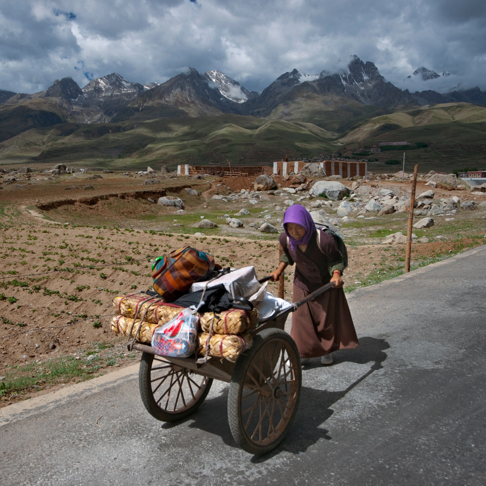

Science
One of the most scenic railways is in Iran
read
Science

New clues reveal the devastation the day the dinosaurs died
read

History & CultureOut of Eden Walk
Rediscovering China's Tea Horse Road, a branch of the Silk Road
read